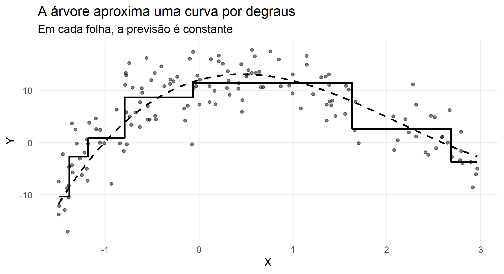
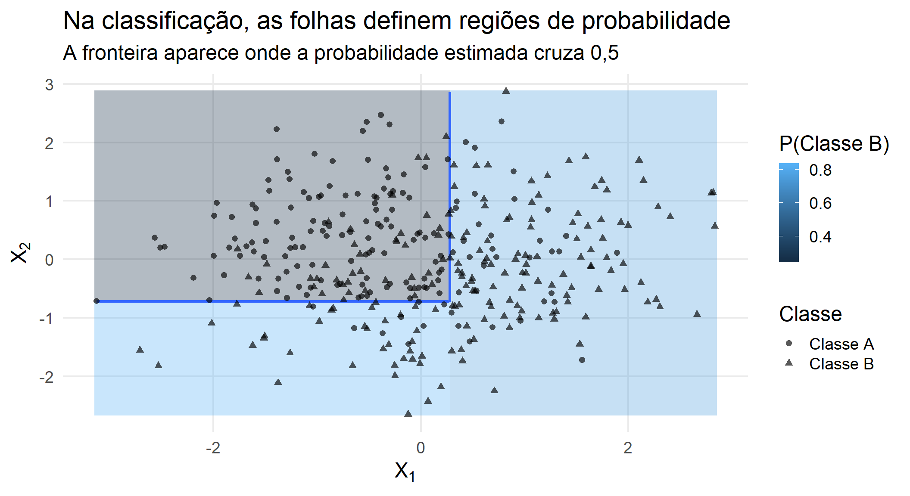
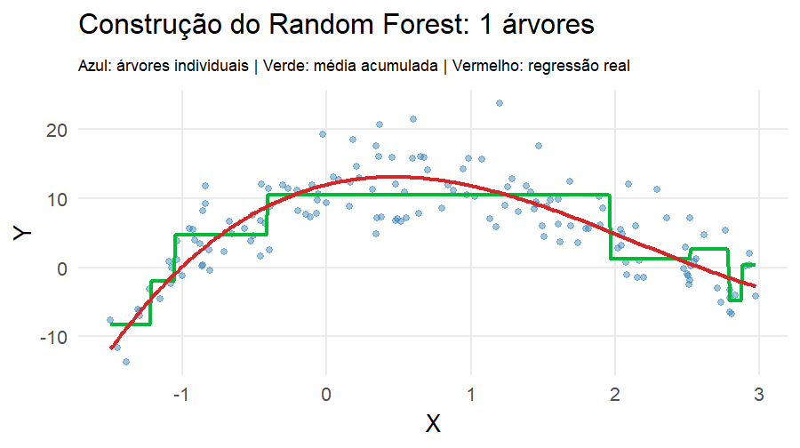
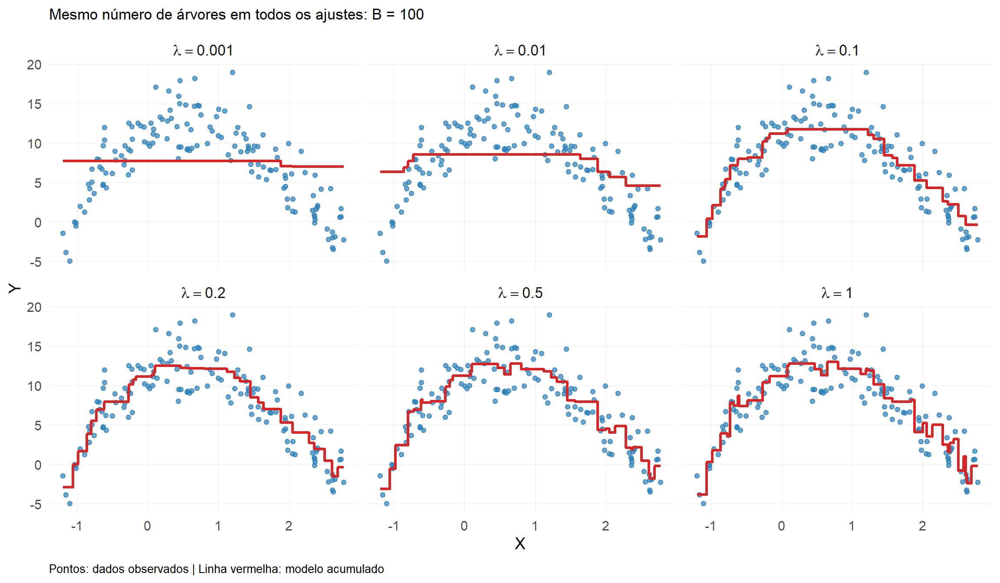

Parte I : Aprendizado Supervisionado
Modelos baseados em árvores
Modelos baseados em árvores
De funções suaves para regras
Até aqui, aproximamos \(g(\mathbf{x})\) usando funções suaves:
- splines
- regressão local
- kernels
Árvores seguem outra lógica:
\[ \boxed{ \text{dividir o espaço de } \mathbf{x} \longrightarrow \text{formar regiões homogêneas} \longrightarrow \text{predizer dentro de cada região} } \]
De funções suaves para regras
A estrutura da árvore é praticamente a mesma em regressão e classificação.
O que muda é:
o que significa “região homogênea”, o que guardamos nas folhas e como combinamos as árvores.
Antes de tudo: regressão ou classificação?
Regressão
A resposta é quantitativa:
\[ Y\in\mathbb{R} \]
Exemplos:
- preço de uma casa
- consumo de energia
- tempo de internação
Folha: produz um valor numérico.
Classificação
A resposta é categórica:
\[ Y\in\{1,\ldots,K\} \]
Exemplos:
- inadimplente / não inadimplente
- espécie
- churn / não churn
Folha: produz classe e/ou probabilidades.
Nós, ramos, folhas e regiões

Cada caminho da raiz até uma folha define uma região \(\mathcal{R}_m\). Quatro folhas correspondem às regiões \(\mathcal{R}_1,\ldots,\mathcal{R}_4\).
Nós, ramos, folhas e regiões
Da raiz até uma folha, fazemos uma sequência de perguntas do tipo
\[ X_j \leq s? \]
Cada resposta escolhe um ramo. Ao final,
\[ \boxed{\text{folha }m \Longleftrightarrow \text{região }\mathcal{R}_m} \]
A árvore é simultaneamente um conjunto de regras, uma partição do espaço preditor e um modelo que associa uma previsão a cada região.
Nós, ramos, folhas e regiões
Uma árvore com \(M\) folhas particiona o espaço em
\[ \mathcal{R}_1,\mathcal{R}_2,\ldots,\mathcal{R}_M. \]
Para uma nova observação \(\mathbf{x}\):
- começamos no nó raiz;
- seguimos as regras de divisão;
- chegamos a uma única folha;
- usamos a previsão associada àquela região.
\[ \boxed{ \mathbf{x}\in\mathcal{R}_m \quad\Rightarrow\quad \text{predição da folha }m } \]
Nós, ramos, folhas e regiões
| Regressão | Classificação | |
|---|---|---|
| Resposta | quantitativa | categórica |
| Resumo da folha | média \(\bar y_m\) | proporções \(\hat p_{mk}\) |
| Predição | \(\hat y=\bar y_m\) | classe de maior probabilidade |
| Região boa | valores de \(y\) parecidos | predominância de uma classe |
Nós, ramos, folhas e regiões
Para regressão:
\[ \hat g(\mathbf{x}) = \sum_{m=1}^{M}\bar y_m\,I(\mathbf{x}\in\mathcal{R}_m) \]
Para classificação:
\[ \hat p_k(\mathbf{x}) = \hat p_{mk}, \qquad \mathbf{x}\in\mathcal{R}_m \]
A pergunta feita em cada nó
Para cada variável \(X_j\) e ponto de corte \(s\), testamos uma regra:
\[ X_j\leq s \qquad\text{versus}\qquad X_j>s. \]
Ela cria duas regiões filhas.
A árvore procura a divisão que produz filhos mais homogêneos que o pai.
\[ \boxed{ \text{melhor split} = \text{maior ganho de homogeneidade} } \]
O significado de homogeneidade depende do problema.
Regressão: reduzir o erro quadrático
Em uma região \(\mathcal{R}_m\), a melhor constante sob perda quadrática é
\[ \bar y_m = \frac{1}{n_m} \sum_{i:\mathbf{x}_i\in\mathcal{R}_m}y_i \]
A impureza do nó pode ser medida por
\[ RSS_m = \sum_{i:\mathbf{x}_i\in\mathcal{R}_m} (y_i-\bar y_m)^2 \]
Regressão: reduzir o erro quadrático
Uma boa divisão produz:
\[ \boxed{ RSS_{\text{esq}}+RSS_{\text{dir}} < RSS_{\text{pai}} } \]
Quanto maior a redução, melhor o split.
Classificação: reduzir a mistura de classes
Se \(\hat p_{mk}\) é a proporção da classe \(k\) no nó \(m\), uma medida comum é o índice de Gini:
\[ G_m = 1-\sum_{k=1}^{K}\hat p_{mk}^{\,2} \]
- \(G_m=0\): nó puro
- \(G_m\) maior: classes mais misturadas
Classificação: reduzir a mistura de classes
A árvore escolhe o split que reduz a impureza ponderada:
\[ \boxed{ G_{\text{pai}} - \left( \frac{n_E}{n}G_E+ \frac{n_D}{n}G_D \right) } \]
Uma alternativa ao índice de Gini é a entropia:
\[ \boxed{ H_m = -\sum_{k=1}^{K} \hat p_{mk}\log_2(\hat p_{mk}) } \]
onde \(\hat p_{mk}\) é a proporção de observações da classe \(k\) no nó \(m\).
Classificação: reduzir a mistura de classes
- Entropia baixa \(\rightarrow\) nó mais puro
-
Entropia alta \(\rightarrow\) maior mistura entre as classes
Tanto Gini quanto entropia procuram a mesma coisa: divisões que produzam nós filhos mais puros que o nó pai.
Mesma árvore, critérios diferentes
Regressão
Pergunta
A divisão reduz a dispersão dos valores de \(Y\)?
Critério típico:
\[ RSS \]
Folha:
\[ \bar y_m \]
Classificação
Pergunta
A divisão separa melhor as classes?
Critérios típicos:
\[ \text{Gini ou Entropia} \]
Folha:
\[ (\hat p_{m1},\ldots,\hat p_{mK}) \]
Exemplo: uma árvore de regressão

Exemplo: uma árvore de classificação

Árvore profunda: baixo viés, alta variância
Uma árvore pode continuar dividindo os dados até criar folhas muito pequenas.
Isso reduz o erro de treinamento, mas pode produzir regras instáveis.
\[ \boxed{ \text{árvore muito profunda} \Rightarrow \text{maior flexibilidade} \Rightarrow \text{maior risco de overfitting} } \]
Pequenas mudanças na amostra podem gerar uma árvore bastante diferente.
Poda (pruning)
Para regressão, uma forma de pensar na poda é:
\[ \boxed{ \text{erro da árvore} + \alpha\times\text{complexidade} } \]
ou, mais especificamente,
\[ \sum_{m=1}^{|T|} \sum_{i:\mathbf{x}_i\in\mathcal{R}_m} (y_i-\bar y_m)^2 + \alpha|T| \]
- \(\alpha\) pequeno \(\rightarrow\) árvore maior
- \(\alpha\) grande \(\rightarrow\) árvore menor
Poda (pruning)
Na classificação, a mesma lógica é usada com uma medida apropriada de erro/impureza.
A poda regulariza uma árvore. Bagging, Random Forest e Boosting seguem outra estratégia: combinar muitas árvores.
O problema da árvore individual
Árvores são:
- interpretáveis
- capazes de capturar não linearidade
- capazes de capturar interações
Mas são também:
- instáveis
- sensíveis à amostra
- de alta variância
Por que combinar árvores?
Considere dois estimadores \(g_1(\mathbf{x})\) e \(g_2(\mathbf{x})\).
Definimos o estimador combinado:
\[ g(\mathbf{x}) = \frac{g_1(\mathbf{x}) + g_2(\mathbf{x})}{2} \]
O erro esperado é:
\[ \mathbb{E}\big[(\boldsymbol{y} - g(\mathbf{x}))^2 \mid \mathbf{x}\big] = \mathbb{V}(\boldsymbol{y} \mid \mathbf{x}) + \frac{1}{4}\mathbb{V}(g_1(\mathbf{x}) + g_2(\mathbf{x})) + \text{bias}^2 \]
Por que combinar árvores?
Se \(g_1(\mathbf{x})\) e \(g_2(\mathbf{x})\) são:
- não viesados
- com mesma variância
- não correlacionados
então:
\[ \mathbb{E}\big[(\boldsymbol{y} - g(\mathbf{x}))^2 \mid \mathbf{x}\big] = \mathbb{V}(\boldsymbol{y} \mid \mathbf{x}) + \frac{1}{2}\mathbb{V}(g_i(\mathbf{x})) \]
Conclusão
\[ \mathbb{E}\big[(\boldsymbol{y} - g(\mathbf{x}))^2 \mid \mathbf{x}\big] \le \mathbb{E}\big[(\boldsymbol{y} - g_i(\mathbf{x}))^2 \mid \mathbf{x}\big] \]
Por que combinar árvores?
Assim, combinar modelos:
- mantém o viés
- reduz a variância
Três maneiras de combinar árvores
Os ensembles respondem de formas diferentes:
\[ \boxed{\text{Bagging: construir em paralelo e agregar}} \]
\[ \boxed{\text{Random Forest: descorrelacionar e agregar}} \]
\[ \boxed{\text{Boosting: construir correções sequenciais}} \]
Durante os próximos slides, acompanhe duas perguntas:
- Como cada nova árvore é construída?
- Como as árvores são combinadas?
Bagging (Bootstrap Aggregating)
Média de vários modelos instáveis → modelo mais estável
Bagging = Bootstrap + Aggregating
Para \(b=1,\ldots,B\):
- sorteie uma amostra bootstrap;
- ajuste uma árvore \(T_b\);
- repita muitas vezes;
- combine as previsões.
\[ \boxed{ \text{Bagging} = \text{Bootstrap} + \text{Agregação} } \]
As árvores são ajustadas em paralelo: uma não depende da anterior.

Como agregamos?
Regressão
Cada árvore fornece um número:
\[ \hat y_b(\mathbf{x}). \]
Agregamos pela média:
\[ \boxed{ \hat y_{\text{bag}}(\mathbf{x}) = \frac1B\sum_{b=1}^{B}\hat y_b(\mathbf{x}) } \]
Classificação
Cada árvore fornece classe ou probabilidades.
Podemos usar:
\[ \boxed{\text{voto majoritário}} \]
ou, preferencialmente, promediar probabilidades:
\[ \boxed{ \hat p_k(\mathbf{x}) = \frac1B\sum_{b=1}^{B}\hat p_{bk}(\mathbf{x}) } \]
Bagging em regressão: veja a estabilização

As árvores individuais variam bastante. A média acumulada se torna progressivamente mais estável.
Por que a média ajuda?
Se cada árvore tem variância aproximadamente \(\sigma^2\) e correlação média \(\rho\), então
\[ \boxed{ \operatorname{Var}(\bar T) = \rho\sigma^2+ \frac{1-\rho}{B}\sigma^2 } \]
Duas mensagens:
- aumentar \(B\) reduz a segunda parcela;
- a parcela \(\rho\sigma^2\) permanece.
Logo:
\[ \boxed{ \text{não basta ter muitas árvores; é útil que elas sejam diferentes} } \]
Bagging em classificação
O mecanismo é o mesmo:
\[ \text{bootstrap} \rightarrow \text{árvore de classificação} \rightarrow \text{probabilidade/voto} \rightarrow \text{agregação}. \]
O que muda em relação à regressão?
| Etapa | Regressão | Classificação |
|---|---|---|
| split | RSS/variância | Gini/entropia |
| folha | média | proporções/classes |
| agregação | média de \(\hat y\) | média de probabilidades/voto |
Random Forest
Construir muitas árvores diferentes e combinar suas previsões
O limite do Bagging
Mesmo com amostras bootstrap diferentes, árvores podem ficar muito parecidas.
Por quê?
Se uma variável é muito forte, ela tende a ser escolhida repetidamente perto da raiz.
Resultado:
\[ \text{árvores semelhantes} \Rightarrow \rho \text{ alto} \Rightarrow \text{menor redução de variância}. \]
Random Forest: descorrelacionar as árvores
O Random Forest adiciona uma segunda fonte de aleatoriedade.
Para cada árvore:
- sorteamos uma amostra bootstrap;
- em cada nó, sorteamos apenas \(m_{\text{try}}\) das \(p\) variáveis;
- procuramos o melhor split somente entre essas candidatas;
- repetimos até construir muitas árvores.
\[ \boxed{ \text{RF} = \text{Bagging} + \text{subamostragem de variáveis em cada split} } \]
Onde Bagging e Random Forest se separam?

No Bagging, todas as \(p\) variáveis podem disputar cada split.
No Random Forest, apenas \(m_{\text{try}}<p\) variáveis sorteadas podem disputar aquele split.
Importante
O subconjunto de variáveis é sorteado novamente em cada nó. Essa aleatoriedade adicional ajuda a reduzir a correlação entre as árvores.

Bagging versus Random Forest
| Bagging | Random Forest | |
|---|---|---|
| Bootstrap de observações | sim | sim |
| Variáveis candidatas por split | todas | subconjunto aleatório |
| Objetivo adicional | estabilizar | estabilizar + descorrelacionar |
| Regressão | média | média |
| Classificação | voto/probabilidades | voto/probabilidades |
Bagging versus Random Forest
Se
\[ m_{\text{try}}=p, \]
o Random Forest se reduz, essencialmente, ao Bagging de árvores.
Com apenas uma variável preditora, não é possível visualizar a diferença essencial entre Bagging e Random Forest: não há variáveis para sortear. Por isso, uma animação univariada de RF se comporta como Bagging.
O que \(m_{\text{try}}\) controla?
\[ m_{\text{try}} = \text{número de variáveis candidatas em cada nó}. \]
- valor grande \(\rightarrow\) árvores mais parecidas
- valor pequeno \(\rightarrow\) árvores mais diversas
- pequeno demais \(\rightarrow\) splits individuais podem piorar
Portanto, existe um compromisso:
\[ \boxed{ \text{força de cada árvore} \quad\text{versus}\quad \text{correlação entre árvores} } \]
\(m_{\text{try}}\) deve ser tratado como hiperparâmetro e pode ser ajustado por validação.
OOB: validação “embutida” no bootstrap
Em cada amostra bootstrap, algumas observações ficam de fora.
Elas são chamadas de out-of-bag (OOB).
Para uma observação \(i\):
- use apenas árvores em que \(i\) ficou fora do bootstrap;
- agregue suas previsões;
- compare com \(y_i\).
OOB: validação “embutida” no bootstrap
Isso fornece uma estimativa de desempenho sem criar uma nova reamostragem interna.
Nota
OOB é especialmente natural em Bagging e Random Forest. Ainda assim, um conjunto de teste independente continua sendo útil para a avaliação final.

Boosting
Construir o modelo sequencialmente, fazendo cada nova árvore corrigir o modelo atual
A mudança fundamental
Bagging e Random Forest constroem árvores aproximadamente em paralelo.
Boosting constrói modelos sequencialmente:
\[ \hat h_1 \rightarrow \hat h_2 \rightarrow \hat h_3 \rightarrow\cdots \]
Cada nova árvore tenta melhorar o modelo acumulado.
A mudança fundamental
Notação
- \(\hat g^{(b)}(\mathbf{x})\): modelo acumulado após \(b\) iterações
- \(\hat h_b(\mathbf{x})\): árvore que fornece a correção na iteração \(b\)
- \(r_i^{(b)}\): resíduo ou pseudo-resíduo usado na iteração \(b\)
- \(\lambda\): learning rate
- \(B\): número total de árvores
\[ \boxed{ \hat g^{(B)}(\mathbf{x}) = \hat g^{(0)}(\mathbf{x}) + \lambda\sum_{b=1}^{B}\hat h_b(\mathbf{x}) } \]
Boosting em regressão: começando pelo erro atual
Com perda quadrática,
\[ L(y,g)=(y-g)^2, \]
o sinal de correção é proporcional ao resíduo:
\[ r_i^{(b)} = y_i-\hat g^{(b-1)}(\mathbf{x}_i) \]
Boosting em regressão: começando pelo erro atual
Na iteração \(b\):
- calcule os resíduos atuais;
- ajuste \(\hat h_b(\mathbf{x})\), uma árvore rasa, aos resíduos;
- adicione uma pequena fração dessa correção ao modelo atual:
\[ \hat g^{(b)}(\mathbf{x}) = \hat g^{(b-1)}(\mathbf{x}) + \lambda\hat h_b(\mathbf{x}) \]
Portanto,
\[ \boxed{ \text{modelo atual} \rightarrow \text{resíduos} \rightarrow \text{nova árvore} \rightarrow \text{modelo atualizado} } \]

Boosting em regressão: veja o modelo aprender

Importante
A linha da nova árvore não é a previsão final. Ela representa apenas a correção adicionada naquela iteração. A previsão é o modelo acumulado.
E na classificação?
Aqui está uma diferença importante.
Em classificação, não faz sentido usar simplesmente
\[ y_i-\hat y_i \]
como se as classes fossem números contínuos.
Usamos uma função de perda de classificação, como a log-loss.
E na classificação?
No gradient boosting, cada nova árvore é ajustada ao gradiente negativo da perda (pseudo-resíduo).
\[ \boxed{ \text{regressão quadrática: pseudo-resíduo = resíduo usual} } \]
\[ \boxed{ \text{classificação: pseudo-resíduo depende da probabilidade e da log-loss} } \]
Classificação binária
Se \(y_i\in\{0,1\}\) e o modelo atual fornece
\[ \hat p_i^{(b-1)} = P\!\left(Y_i=1\mid\mathbf{x}_i;\,\hat g^{(b-1)}\right), \]
sob log-loss, o sinal de correção é proporcional a
\[ \boxed{ r_i^{(b)}=y_i-\hat p_i^{(b-1)} } \]
Classificação binária
Exemplos:
| \(y_i\) | \(\hat p_i^{(b-1)}\) | \(y_i-\hat p_i^{(b-1)}\) | leitura |
|---|---|---|---|
| 1 | 0,95 | 0,05 | quase nada a corrigir |
| 1 | 0,20 | 0,80 | aumentar fortemente a evidência para classe 1 |
| 0 | 0,10 | -0,10 | pequena correção |
| 0 | 0,85 | -0,85 | reduzir fortemente a evidência para classe 1 |
Nota
Essa tabela é uma interpretação didática do gradient boosting binário com log-loss. A implementação trabalha na escala do escore/logit e atualiza o modelo aditivo.
Boosting em classificação: veja a correção

À esquerda, o modelo acumulado atualiza a probabilidade \(\hat p^{(b)}=P(Y=1\mid X)\).
À direita, visualizamos o sinal de correção \(y_i-\hat p_i^{(b-1)}\).
Compare com regressão: a lógica modelo atual + pequena correção permanece. O que muda é a função de perda e, consequentemente, o pseudo-resíduo.
O papel do learning rate \(\lambda\)
Cada árvore sugere uma correção.
O learning rate controla quanto dessa correção será incorporado:
\[ \hat g^{(b)}(\mathbf{x}) = \hat g^{(b-1)}(\mathbf{x}) + \lambda\hat h_b(\mathbf{x}) \]
\(\lambda\) pequeno
- passos menores
- aprendizado mais gradual
- normalmente exige mais árvores
- tende a oferecer maior controle
\(\lambda\) grande
- passos maiores
- aprende mais rapidamente
- pode precisar de menos árvores
- pode sobreajustar mais cedo
Boosting: o papel do learning rate \(\lambda\)

Observe a figura: para o mesmo número de iterações, aumentar \(\lambda\) faz o modelo acumulado se aproximar mais rapidamente dos dados. Portanto, \(\lambda\) e o número de árvores \(B\) devem ser analisados conjuntamente.
Boosting e Estimadores Fracos
O boosting não é restrito ao uso de árvores.
Podemos usar qualquer modelo como base, desde que seja um estimador fraco. (Deve aprender uma correção, não resolver sozinho todo o problema)
O que é um estimador fraco?
- modelo simples
- baixo poder preditivo individual
- pequeno viés de ajuste
Exemplos: árvores rasas (stumps), regressão linear simples, modelos com poucos parâmetros
Por que usar modelos fracos?
- evitam overfitting em cada etapa
- permitem correções graduais
- tornam o aprendizado mais estável
Se você usar modelos muito complexos (ex: árvores profundas):
👉 boosting pode superajustar rapidamente

Três ensembles, três mecanismos
Bagging, Random Forest e Boosting
| Bagging | Random Forest | Boosting | |
|---|---|---|---|
| Construção | paralela | paralela | sequencial |
| Reamostragem | bootstrap | bootstrap | depende do algoritmo |
| Variáveis por split | todas | subconjunto | geralmente todas |
| Principal ideia | média reduz variância | reduzir variância e correlação | corrigir erros/gradiente |
| Árvores | usualmente profundas | usualmente profundas | usualmente rasas |
| Regressão | média | média | soma aditiva |
| Classificação | voto/prob. | voto/prob. | escore/prob. aditivos |
O que permanece igual entre regressão e classificação?
A estrutura geral:
\[ \boxed{ \text{regras recursivas} \rightarrow \text{regiões} \rightarrow \text{folhas} } \]
e as ideias dos ensembles:
- Bagging: agregar
- Random Forest: agregar árvores menos correlacionadas
- Boosting: somar correções sequenciais
O que muda entre regressão e classificação?
| Componente | Regressão | Classificação |
|---|---|---|
| alvo | número | classe |
| split de árvore | RSS/variância | Gini/entropia |
| folha | média | probabilidade/classe |
| perda típica | quadrática | log-loss, erro etc. |
| bagging/RF | média | probabilidade média/voto |
| boosting | resíduos sob MSE | pseudo-resíduos da perda |
A mudança não está na ideia de “árvore”. Está na função de perda, no critério de split e na forma de produzir/agregar a previsão.
Como escolher na prática?
Uma leitura estatística
Árvore individual
- máxima interpretabilidade
- regras explícitas
- maior instabilidade
Bagging
- reduz variância
- perde parte da interpretabilidade da árvore única
Uma leitura estatística
Random Forest
- reduz variância e correlação entre árvores
- forte baseline para dados tabulares
Boosting
- constrói modelo aditivo de forma sequencial
- frequentemente alto desempenho
- maior sensibilidade à escolha dos hiperparâmetros
Fluxo de modelagem
\[ \boxed{ \text{treino} \rightarrow \text{reamostragem/validação} \rightarrow \text{ajuste de hiperparâmetros} \rightarrow \text{modelo final} \rightarrow \text{teste} } \]
Exemplos de hiperparâmetros:
- árvore: profundidade, tamanho mínimo do nó, poda
- Random Forest: \(m_{\text{try}}\), tamanho mínimo do nó, número de árvores
- Boosting: \(B\), \(\lambda\), profundidade
O conjunto de teste permanece reservado para a avaliação final.
EST335 — Semana 7